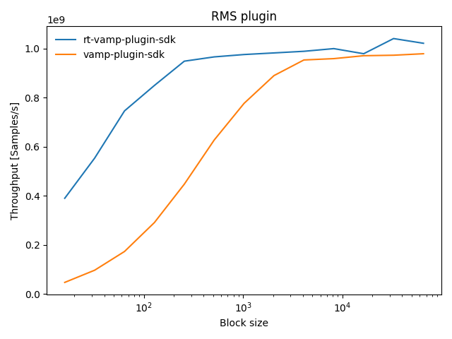
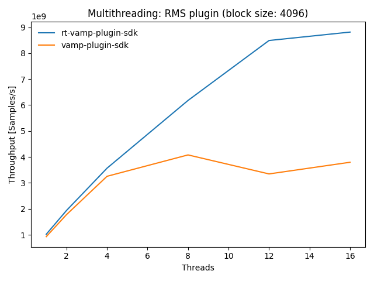

{kind=link}
{kind=link}

|
rt-vamp-plugin-sdk
Real-time Vamp plugin SDK for C++20
|
Vamp is an C/C++ plugin API for audio analysis / feature extraction plugins: https://www.vamp-plugins.org
This SDK for plugins and hosts targets performance-critical applications by:
constexpr evaluation for compile time errors instead of runtime errorsThe SDK aims to be well tested, cross-platform and use modern C++. The plugin SDK is available as a single-header library (download as asset from latest release page).
Compiler support: GCC >= 10, Clang >= 11, MSVC >= 19.30
Following benchmarks compare the performance/overhead of the plugin SDKs based on a simple RMS plugin. The performance is measured as throughput (number of processed samples per second).
Results with an i7-9850H CPU (12 cores):
| Throughput vs. block size | Multithreading |
|---|---|

|

|
Results with an ARMv7 CPU: Throughput vs block size, Multithreading
The official SDK offers a convenient C++ plugin interface. But there are some drawbacks for real-time processing:
Huge amount of memory allocations due to the use of C++ containers like vectors and lists passed by value.
Let's have a look at the process method of the Vamp::Plugin class which does the main work:
FeatureSet process(const float *const *inputBuffers, RealTime timestamp)
FeatureSet is returned by value and is a std::map<int, FeatureList>. FeatureList is a std::vector<Feature> and Feature is struct containing the actual feature values as a std::vector<float>. So in total, those are three nested containers, which are all heap allocated.
The C++ API is a wrapper of the C API:
On the plugin side, the PluginAdapter class converts the C++ containers to C level (code). Therefore the C++ containers are temporary objects and will be deallocated shortly after creation.
On the host side, the PluginHostAdapter converts again from the C to the C++ representation (code).
The rt-vamp-plugin-sdk aims to to keep the overhead minimal but still provide an easy and safe to use API:
static constexpr variables to generate the C plugin descriptor at compile time.std::span) to prevent heap allocations during processing.TimeDomainBuffer (std::span<const float>) or a FrequencyDomainBuffer (std::span<const std::complex<float>>). The process method takes a std::variant<TimeDomainBuffer, FrequencyDomainBuffer>. A wrong input buffer type will result in an exception. The sized spans enable easy iteration over the input buffer data.Following features of the Vamp API Vamp::Plugin are restricted within the rt-vamp-plugin-sdk:
OutputDescriptor::hasFixedBinCount == true for every output. The number of values is constant for each feature during processing. This has the advantage, that memory for the feature vector can be preallocated.OutputDescriptor::SampleType == OneSamplePerStep for every output. The plugin will generate one feature set for each input block.
Following parameters are therefore negitable:
OutputDescriptor::sampleRateOutputDescriptor::hasDurationFeature::hasTimestamp & Feature::timestampFeature::hasDuration & Feature::durationgetMinChannelCount() == 1More examples can be found here: https://github.com/lukasberbuer/rt-vamp-plugin-sdk/tree/master/examples.
1.8.17